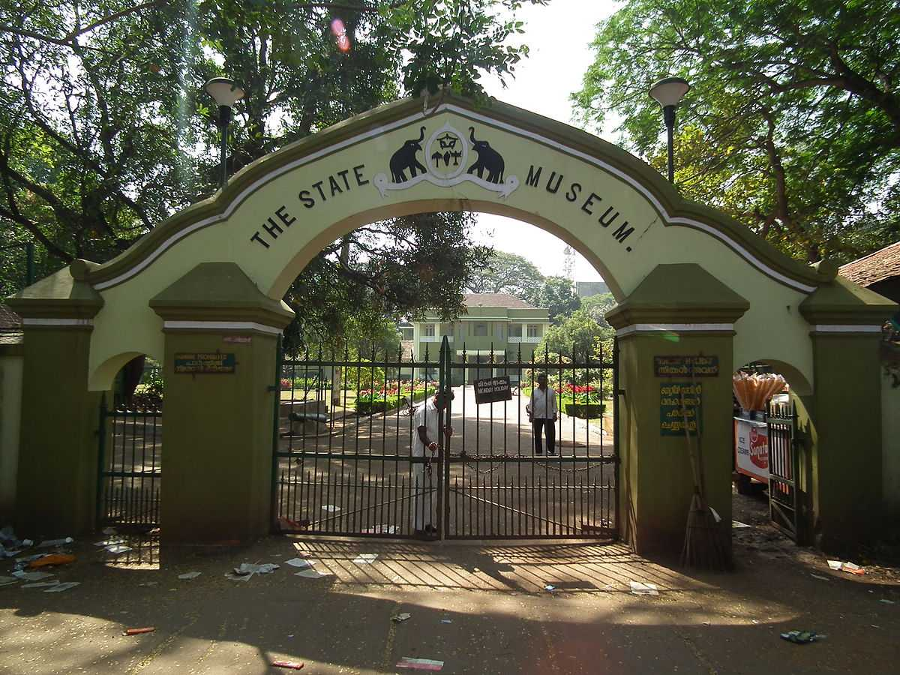

Athirapally Falls
Located 60 km from the Thrissur district of Kerala, Athirapally Falls is a marvellous cascade of frothy waters that makes its way from the Anamudi mountains of the Western Ghats. Also called as Bahubali Waterfall, this 80 ft high and 330 ft wide marvel is the largest waterfall in Kerala. It is often referred to as the "Niagara Falls of India".

Thrissur Zoo
Formerly known as the Trichur Zoo, Thrissur Zoo and the State Museum is located in the heart of Thrissur city, Kerala. Started in the year 1885, the attraction covers an area of approximately 13.5 acres. The zoo houses a wide variety of animals, reptiles, and birds. Besides the extensive variety of fauna, the zoo has many other attractions to fascinate you

Shakthan Thampuran Palace
Shakthan Thampuran Palace situated in the town of Thrissur marks the royal residence of the king of Cochin and has been a famous tourist attraction because of its historical value. Popularly known as Vadakkekara Palace, it dated back to the time of the King of Cochin named Rama Varma Shakthan Thampuran and was constructed in 1795.